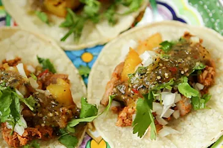

Manto Recipe

How to make manto
First thing first, you need flour mixed with eggs and add grinded meat with different flavors
of spicy dishes pepper garlic etc.
this is Afghan dish which has got global pupolirity and very tasty food
Steps to Make Kabab
- wash the meat and put it into stick
- leave it on oven for 15minutes
- make sure the both side of it is cooked well